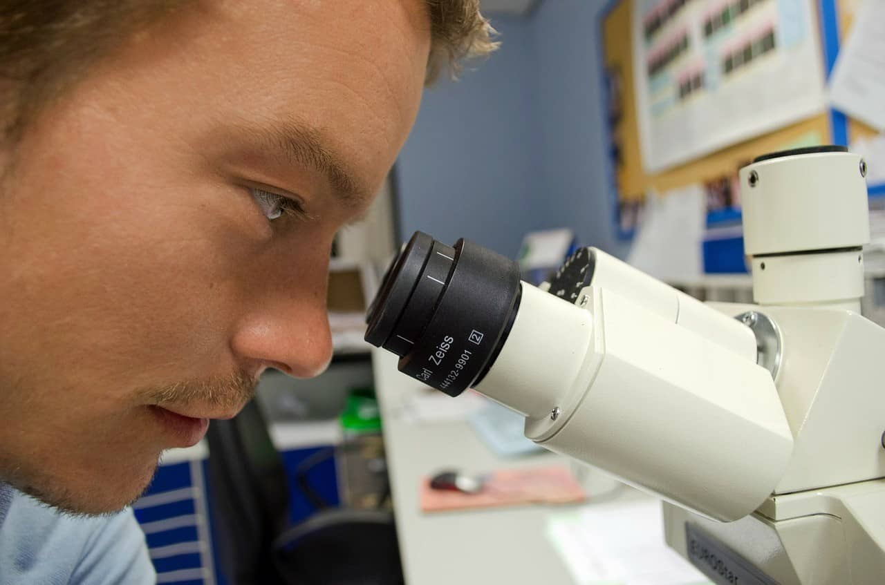
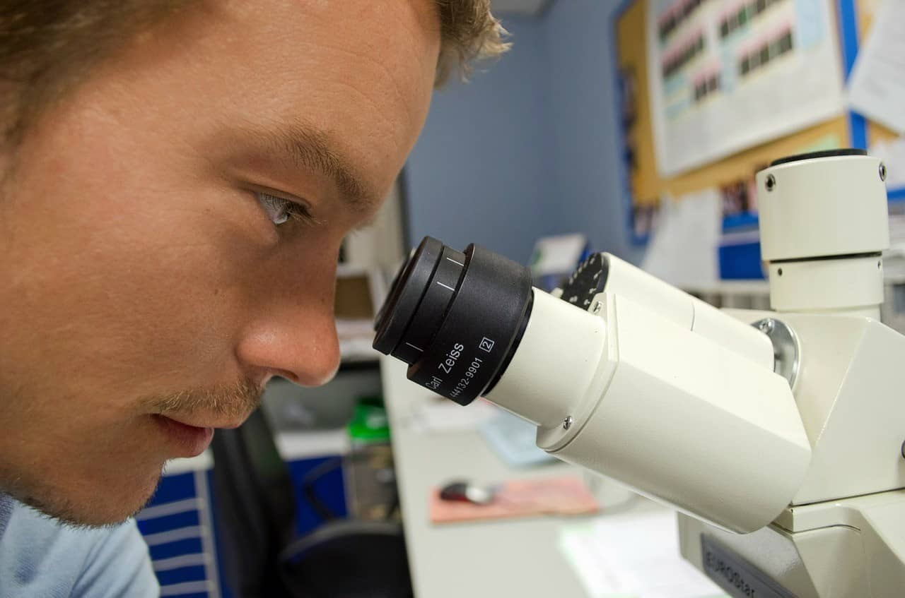

"Explore together"
Come join us at the Community Science Museum where we’re committed
to making science accessible to all.
Over the course of human history, science has developed from our
early understanding of fire, wind, water, and earth to exploring
everything from
galaxies far away to the very building blocks of life itself. The
aim of our museum is to create a space where everyone can experience
the wonders of our discoveries and perhaps even ignite a lifelong
passion to continue the exploration of the world around us. We
believe science should not be confined to the textbook, but brought
to live through exhibits. This is why we have over 1000 different
exhibits on the many varied subjects of science to explore. Many of
these exhibits are designed for you to interact with and play around
to see science come to life (apart from the dinosaur exhibits – they
only come to life at night when everyone’s gone home).

 
